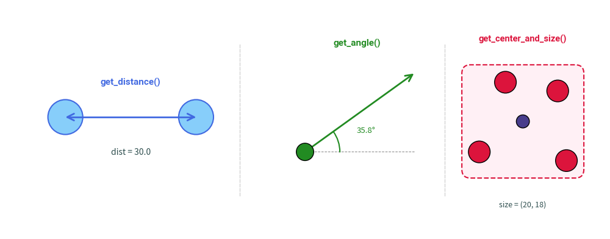
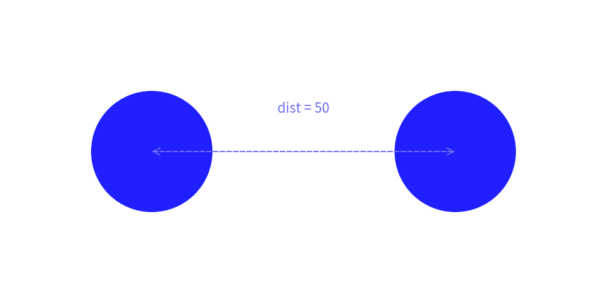
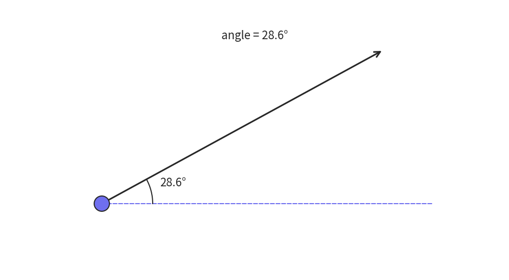
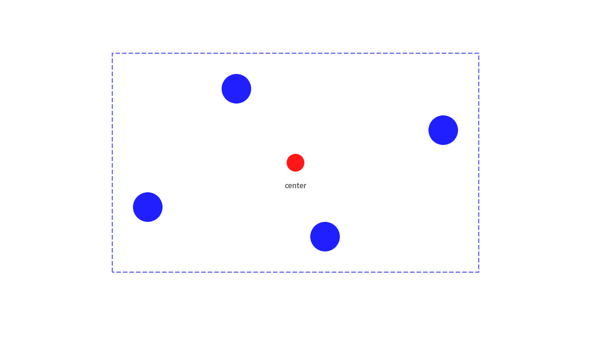

Geometry & Math Utilities
The drawlib.math module provides lightweight mathematical and geometric helper functions for computing angles, Euclidean distances, bounding boxes, and centroids during programmatic illustration authoring.
1. Available Functions
from drawlib.math import (
get_angle,
get_center_and_size,
get_distance,
)
| Function | Signature | Return Type | Description |
|---|---|---|---|
get_distance |
get_distance(xy1, xy2) |
float |
Computes the Euclidean distance between two 2D coordinates xy1=(x1, y1) and xy2=(x2, y2). |
get_angle |
get_angle(xy1, xy2) |
float |
Calculates the angle in degrees (0.0 to 360.0) from point xy1 to xy2 relative to the positive X-axis. |
get_center_and_size |
get_center_and_size(xys) |
tuple[tuple[float, float], tuple[float, float]] |
Calculates the geometric center (center_x, center_y) and bounding box dimensions (width, height) for an array of coordinates. |

2. Usage Examples
2.1 Calculating Distance and Dynamic Radius
from drawlib.canvas import setup
from drawlib.lines import line
from drawlib.math import get_distance
from drawlib.shapes import circle
from drawlib.text import text
from drawlib.config import styles
setup(width=100, height=50)
p1 = (25, 25)
p2 = (75, 25)
dist = get_distance(p1, p2) # 50.0
# Draw concentric nodes based on computed distance:
circle(p1, radius=dist / 5, style=styles.blue_flat)
circle(p2, radius=dist / 5, style=styles.blue_flat)
line(p1, p2, arrowhead="<->", style=styles.dashed)
text((50, 32), f"dist = {dist:.0f}", style=styles.primary)

2.2 Computing Rotation Angle for Custom Vectors
from drawlib.canvas import setup
from drawlib.lines import line, line_arc
from drawlib.math import get_angle
from drawlib.shapes import circle
from drawlib.text import text
from drawlib.config import styles
setup(width=100, height=55)
start = (20, 15)
target = (75, 45)
angle = get_angle(start, target)
# Baseline and directional vector
line(start, (85, 15), style=styles.dashed)
line(start, target, arrowhead="->", style=styles.bold)
line_arc(start, width=20, height=20, angle_start=0, angle_end=angle, style=styles.primary)
circle(start, radius=1.5, style=styles.primary)
text((34, 19), f"{angle:.1f}°", style=styles.primary)
text((50, 48), f"angle = {angle:.1f}°", style=styles.primary)

2.3 Centroid and Bounding Box for Clusters
from drawlib.canvas import setup
from drawlib.math import get_center_and_size
from drawlib.shapes import circle, rectangle
from drawlib.text import text
from drawlib.config import styles
setup(width=100, height=60)
nodes = [(25, 25), (40, 45), (55, 20), (75, 38)]
(center_x, center_y), (width, height) = get_center_and_size(nodes)
# Automatically enclose nodes within a cluster boundary box with padding:
rectangle(
xy=(center_x, center_y),
width=width + 12,
height=height + 12,
style=styles.dashed,
)
for pt in nodes:
circle(pt, radius=2.5, style=styles.blue_flat)
circle((center_x, center_y), radius=1.5, style=styles.red_flat)
text((center_x, center_y - 4), "center", style=styles.primary, size=9)

© 2026 drawlib by Yuichi Ito. Released under the Apache 2.0 License.